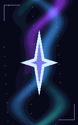

Votre compte, votre skin
Connectez Microsoft et retrouvez votre identité Minecraft.
MINECRAFT JAVA / WINDOWS
Vos versions. Vos mods. Votre identité.
Un launcher pour préparer la partie, un client pour se l’approprier.
Launcher gratuit · Compte Minecraft Java requis pour jouer en ligne

01 / DU LAUNCHER À LA PARTIE
Installez une version, retrouvez vos mods et gardez vos mondes à portée de main. Le catalogue Modrinth sélectionne les fichiers compatibles avec votre installation.
Connectez Microsoft et retrouvez votre identité Minecraft.
Mémoire, versions et préférences sont enregistrées sur votre PC.
Les mises à jour compatibles téléchargent les fichiers modifiés du launcher et conservent vos jeux.
02 / VOTRE SIGNATURE
Badges, couleurs de pseudo et capes équipées se partagent entre joueurs XRN. Prévisualisez chaque cape avant de la choisir.

XRN PRIME / CAPE ANIMÉE
Un ruban de lumière entre deux constellations. Une cape animée, jusque dans les aperçus.
Aperçu uniquement. Les achats se font dans le launcher, avec votre compte connecté.
Le catalogue de capes, quatre exclusivités animées, deux imports tous les sept jours, un studio recto-verso et cinq tenues.
Les couleurs de pseudo restent gratuites. Vos capes achetées à l’unité restent acquises après expiration de Prime. Les images importées sont vérifiées automatiquement avant partage.
03 / COMPATIBILITÉ
Le launcher gère vos installations. Le client en jeu nécessite une version adaptée au moteur de Minecraft.
Versions Minecraft Java, y compris les anciennes comme la 1.8.
Fabric · Java 21 pour la 1.21.11, Java 25 pour les 26.x. Les autres versions se lancent sans mod XRN incompatible.
Un compte Minecraft Java valide est requis pour les serveurs authentifiés. Un profil solo local est aussi disponible.
04 / QUAND VOUS VOULEZ
L’installeur télécharge XRN, prépare son dossier et crée vos raccourcis. Vos mondes Minecraft restent séparés de l’application.
Télécharger XRN-Setup.exe↓Windows x64 · v4.14.0
Consultez les conditions et la confidentialité, puis choisissez vos raccourcis.
Utilisez la fenêtre Microsoft. XRN ne demande jamais lui-même votre mot de passe.
Choisissez votre version, ajustez le HUD et rejoignez votre monde ou votre serveur.
05 / QUELQUES RÉPONSES
Oui. Le launcher, le client et les couleurs de pseudo sont gratuits. Job Application est la cape gratuite. Les capes fixes premium coûtent 1,99 € et Singularité 2,99 €. Prime est facultatif à 4,99 €/mois.
Vos cosmétiques sont visibles par les autres utilisateurs du client XRN avec le partage d’apparence activé. Les joueurs utilisant uniquement Minecraft vanilla ne reçoivent pas ces cosmétiques.
L’application et les données du jeu sont séparées. Une mise à jour de XRN conserve vos jeux, versions et comptes. Gardez des sauvegardes de vos mondes, notamment avant de changer de version Minecraft.
Les navigateurs évaluent eux-mêmes la réputation des fichiers. XRN est une application indépendante et l’installeur actuel n’est pas signé avec un certificat de signature de code reconnu publiquement. Utilisez uniquement le lien de release officiel de ce site. Si un fichier est signalé dangereux, ne désactivez pas votre protection : transmettez sa version et le message au contact du projet pour vérification.
Le launcher vérifie la version publiée au démarrage. Une notification propose la mise à jour. Les correctifs compatibles téléchargent les fichiers modifiés ; un paquet complet peut être nécessaire si le moteur de l’application change.